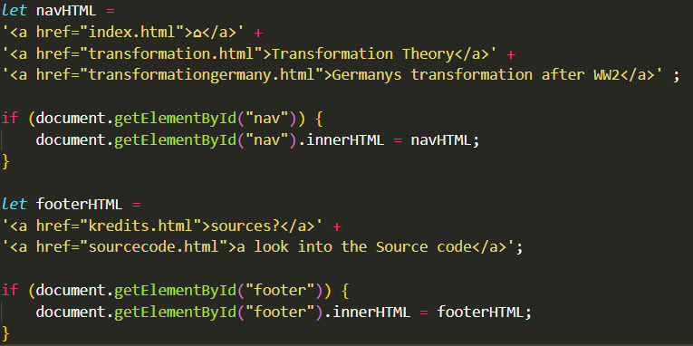

You can look at the full sourcecode here!
Basic HTML and CSS
HTML (Hypertext Markup Language)
Basically the thing that makes websites usable.
To understand how webpages are build you need to understand basic html. It is the framework which makes it possible to style certain elements.

This is how this page looked when I was working on it. It consists of elements which need to be opened and closed (with certain exeptions) by category tags.
However the interesting part beginns in the "body"-category <body>. The text that is in here can be visible on a webpage.

All "div"-categories are important for styling and don't effect the content of the page.
"h1" (Header 1), "h2" (Header 2) and "p" (Paragraph) are also used for the styling but they have predefined styling meaning they will display smaller or bigger depending on the category. Titles use "h1", "h2", "h3"... up to "h6". It's similar to Word's predefiened headers.
"a" is used to link to different websites or a different site on the same website.
The "img" category is used to display images. It's very usfull for adding pictures or gifs a page. You can also add links to images!
CSS (Cascading Style Sheets)
Basically the thing that makes websites pretty.
For the CSS to be visible on the webpage, we need to link a source to the HTML document.

That's what this element is for.

This is the beginning of the CSS document. Here are variables declared, which make it easier to change colors for example. Next to this the scrollbar is styled to look thiner than the basic one. And lastly the background color is set, the color of the text is set and the font of the webpage is defined.

If you change the attributes of an element in css, all of said element changes but with classes or IDs we can pick certain ones which can have a different style.
For example a normal div element would display text like the p element. With the class "title" however it is desplaid bigger, with a differen color and a different font.
Bonus: Javascript
Most webpages use javascript next to HTML and CSS. This website does too but only for the navigation menu and the footer to have them displayed the same on every page.
